Margot2001.GitHub.io
10 weeks at the biohack academy at the Waag
View My GitHub Profile
Staining cells
Chloroplast Isolation
Homepage

This work is licensed under a Creative Commons Attribution 4.0 International License.
The Microbiome
Microbes, mainly bacteria, outnumber human cells in our body by 10 to 1. Scientists have so far identified 10,000 different species of bacteria, fungi and viruses that live in and on the body. These microbes usually coexist with the human body in peaceful harmony, playing important roles in health, such as aiding digestion and preventing harmful infections. Understanding which microbes live where may help scientists understand how to treat people with disorders, including eczema and digestive disorders, that have been linked to specific kinds of bacteria. These microbial communities are collectively known as the Human Microbiome
Microbial fingerprint
Scientists reported that they were able to identify unique microbial "fingerprints" for more than one hundred participants of the Human Microbiome Project. Like the scientist says in this article, it has quite a few consequences.
"A key premise of some microbiome researchers is that the human genome coevolved with the genomes of countless microbial species. If this is the case, it raises deep questions about our understanding of what it really means to be human. Typically, we draw a distinction between environmental and genetic factors in understanding human traits and the development of disease. What precisely is meant by “environmental” varies dramatically across disciplines. Irrespective of how environmental factors are conceptualized in a given study, a common focus is their interaction with stable genetic factors. Traditionally, the microbial communities in and around us would be counted towards the environmental, rather than the genetic side of this equation. Given recent findings from human microbiome research, however, this classification may need to be reconsidered. If the microbiome, on a species level, coevolved with the human genome and, on an individual level, is a unique and enduring component of biological identity, then the microbiome may need to be thought of more as “a part of us” than as a part of the environment."
This made me interested in the idea of making portraits of people on a microbial level.
I started with experimenting by seeing what would grow from hair. If you put a hair in a petridish you have the problem that contamination occurs more easily then by growing something small. You have to keep the dish open longer, fiddle with hair to fit in and get it on the agar, etc. Contamination means that you are growing something from the air or from your fingers instead of the bacterium of fungi you were aiming for. When you inoculate things in petridishes you try to work as sterile as possible with a gasburner and by cleaning all your utensils with alcohol. So even though I was afraid for contamination, the outcome was quite good.
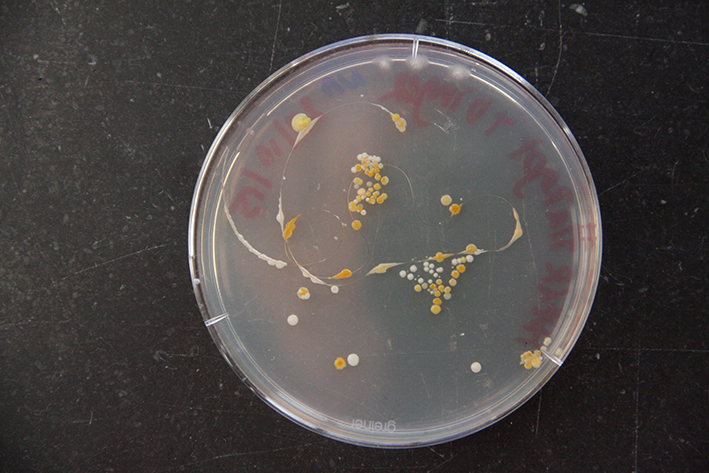
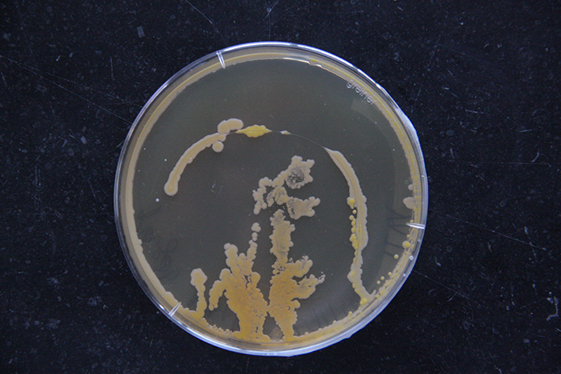
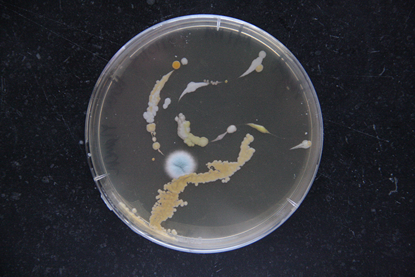
Next I read that the most diversity of microbes live on your forearm. On average, 44 different types of bacteria reside on the forearm, compared with 19 species living behind the ear. So I took some samples of my friendly costudents forearms.
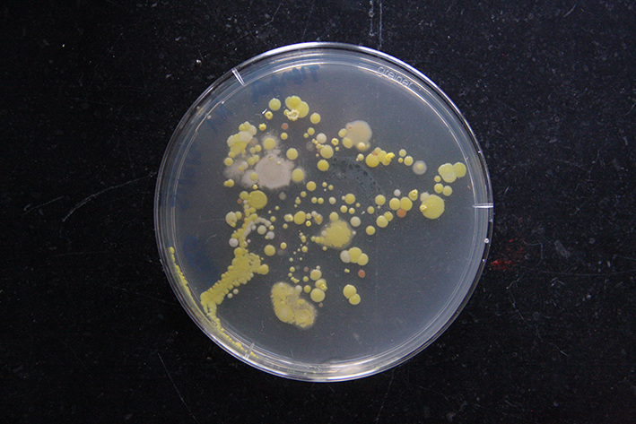
From the arm of Erwin
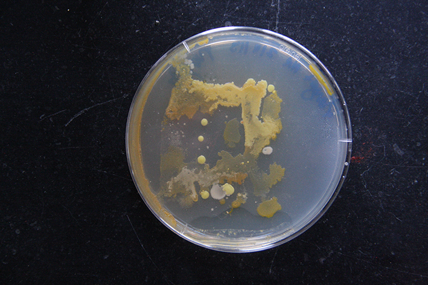
From the arm of myself
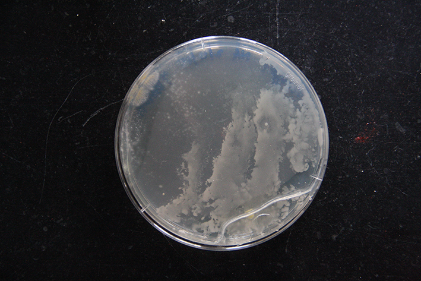
And the arm of Manon
Final Portraits
In the end I decided that the best way to make a portrait would be to get a sample from all the parts of the body. That was not feasible. Instead, for the final portraits, I took a sample of the forearm, some saliva and a hair. The following pictures are the final portraits from the people available at that time in de Waag. There is a problem with these portraits, they can not be complete, because not all organisms will grow in a petridish. Actually, most of them wont grow in a petridish, so what we see in these portraits is just a small sample of the amazing bioactivity on and in our bodies. My aim is to do more research on this subject and to keep working on these portraits: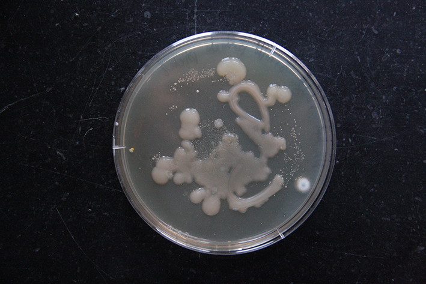
Portrait of Pieter
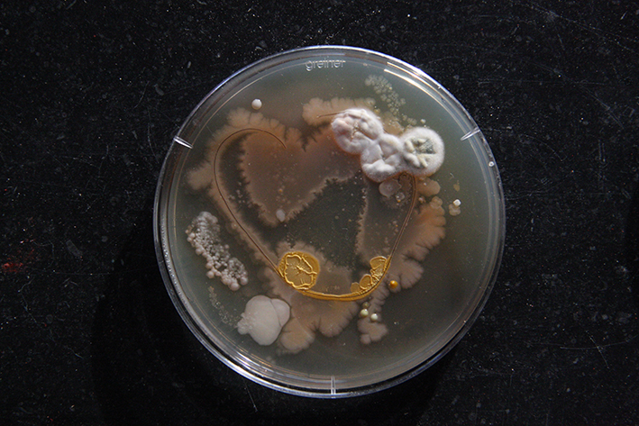
Portrait of Yasemin
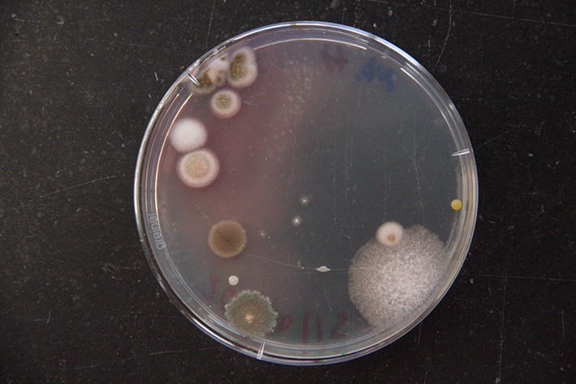
Portrait of Manon
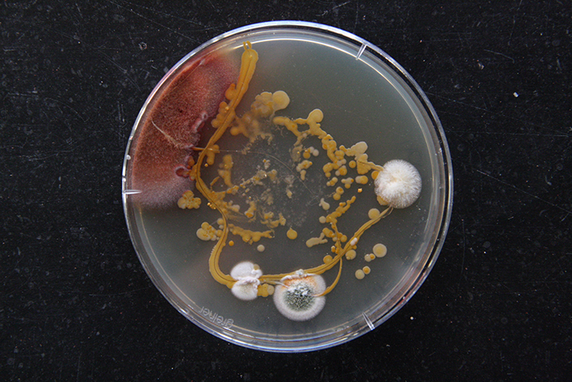
Portrait of myself
I have spent a lot of time photographing the details of the growing portraits, some of them you can see below. I am planning to make a little book with them. A long time ago I made another little book about revolving patterns in nature, where I play with the concept of micro and macro patterns and will do something similar with the pictures of these microbes. The close-ups were made possible because Bas Uterwijk was so kind to lend me his macrolens. Thanks again Bas ;).
Details
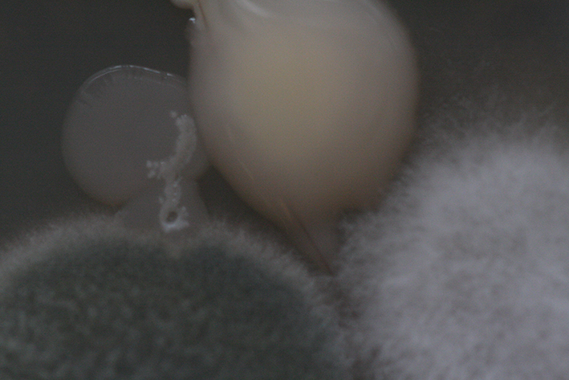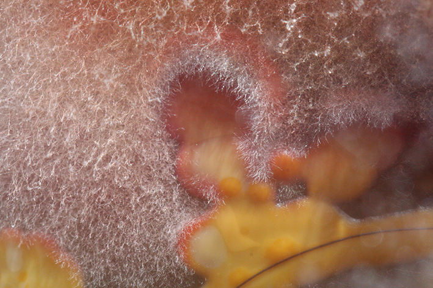
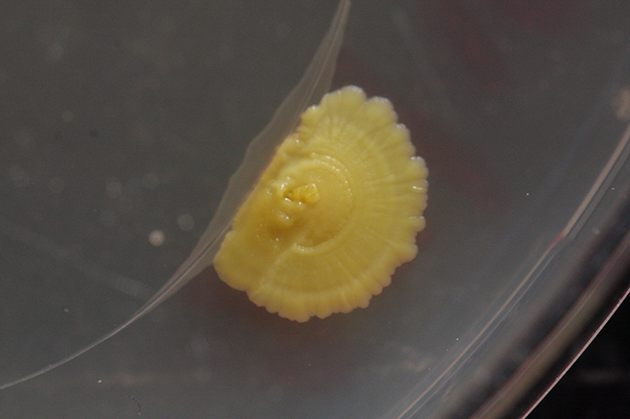
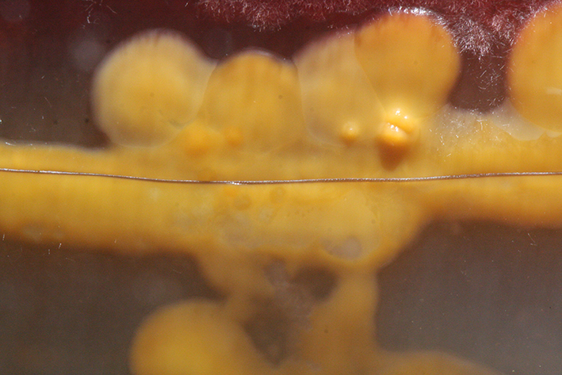
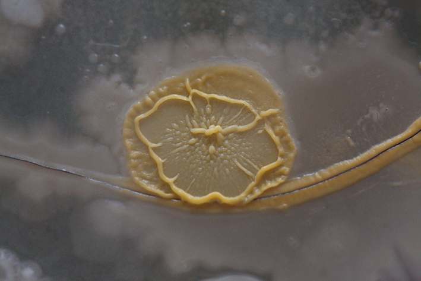
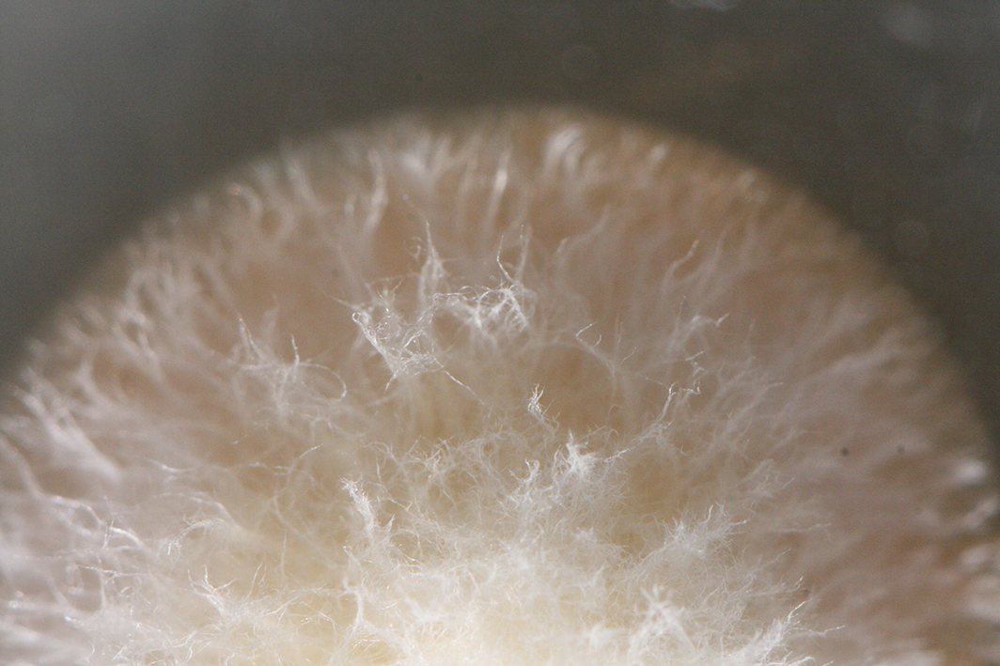
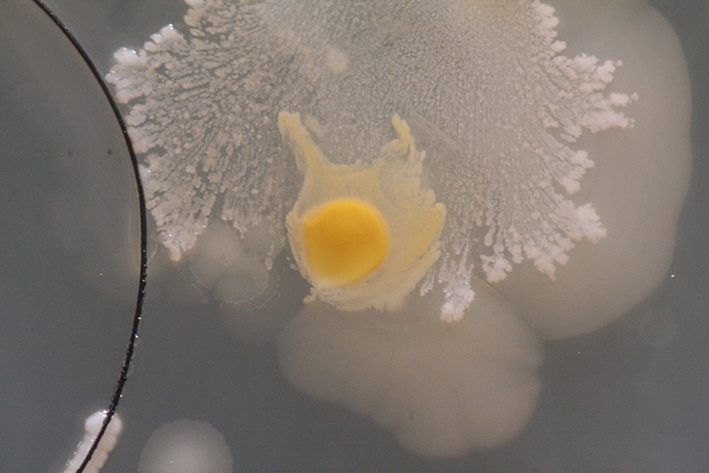
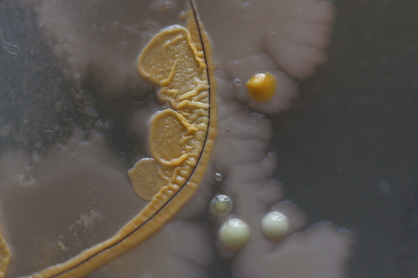
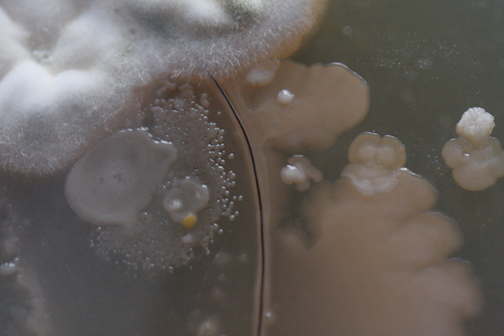
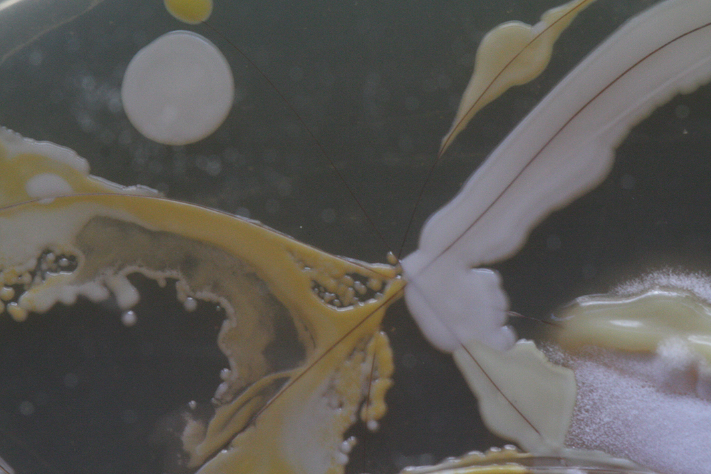